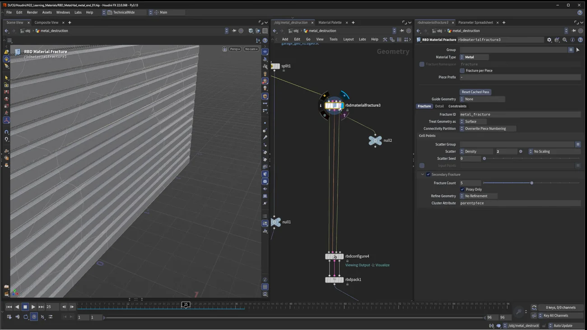
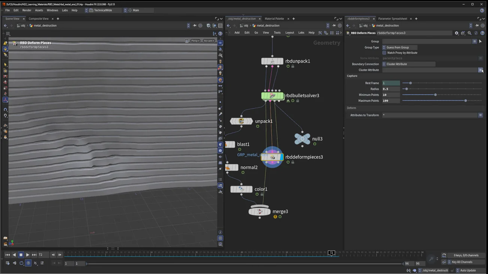

金属を壊す 2 — 凹ませる
出典: Houdini 22 | How to Destroy Metal | 2 | Denting （SideFX 公式「Houdini 22 How-To」の1本 / Houdini 22 / 15:34 / 英語）。 このページは、上記の動画を見ながら自分用にまとめた日本語の学習メモです。SideFX 公式の翻訳ではありません。 前回は引き裂く（Tearing）でした。
狙う結果
金属球が次々にぶつかって壁がへこみます。破片は飛ばず、曲がって残ります。
前回との違いは2つです。
- プロキシだけを二次破砕する
- 制約を主破砕の切れ目に限定する
1. 大砲側のセットアップ（既製）
球のほうは用意されているものを見ていく形です。
| 手順 | 内容 |
|---|---|
| 形 | sphere → polybevel → subdivide → グリッドの上に乗せ、transform で発射位置へ |
| 速度 | 点速度（v アトリビュート）を付けます。
確認は I を押してビューポートで v を選びます（ビジュアライザをオンに） |
| ばらつき | Alligator Noise で速度に倍率をかけ、球ごとに強弱をつけます |
| 出るタイミング | delete ノードで $F % 10 の式を使い、
10フレームごとに1個だけ現れるようにします。毎フレーム重なって出るのを防ぎます |
ビューポートの見た目を良くする小技
- work lights をクリック＆ホールドして Dome Light に
- もう一度クリック＆ホールド → Properties → File → Houdini HDRI からガレージの HDRI を選び、露出を上げます
- ビューポートの AO もオンに
本題ではありませんが、作業中の見え方が良いと判断が速くなります。 金属の凹みは陰影で分かるものなので、ここは実利があります。
2. 壁を二次破砕する（この回の核心）
- 新しい RBD Material Fracture。Material Type を concrete から Metal に、Manual モードに
- Fracture タブ。主 Density を
2に（かなり粗い）。Auto Update に戻してWで確認 - Secondary Fracture を有効にします。ところが破片が見えません
破片が見えない理由
Proxy Only がオンだからです。
プロキシジオメトリの出力（Null を繋いで確認）を見ると、そこには細かい破片があります。
これは意図的で、ここがこのワークフローの面白さです。
プロキシだけを破砕することで、大きな破片が曲がれるようになり、凹みに細かいディテールが出る。
レンダーする側の破片は大きいまま。シミュレーションする側だけが細かい。 だから「大きな1枚の板が、なめらかに凹む」という見え方になります。 細かく割ってしまうと、凹みではなく粉砕になってしまいます。

| 設定 | 値 |
|---|---|
| Scatter | Density 2 |
| Treat Geometry as | Surface（薄板） |
| Secondary Fracture の Fracture Count | 5 |
| Proxy Only | オン |
| Refine Geometry | 有効（下の節を参照） |
| Cluster Attribute | parentpiece |
Constraints は Glue を 500、そして Dampening を上げます （前回学んだ安定化です）。
3. 球と壁を合流させる
- 球側に RBD Configure。
rbd_emitアトリビュートで放出させ、 Type を Metal → Steel（球なので重く） - 壁側は前回の RBD Configure をコピペ。ただし放出アトリビュートを有効にして値を 0 に
なぜ壁にも 0 を入れるのか。 ソルバの Emit RBDs をオンにすると、 両方のオブジェクトに明示的な emit アトリビュートが必要になるからです。
グループで分ける方法もありますが、講師はこちらの方が見て分かりやすいとしています。
- RBD Pack で2つを結合 →
merge→ RBD Unpack （Transfer Attributes と Transfer Groups を念のためオンに）→ RBD Bullet Solver - 再生しても何も出ない → Emit RBDs をオンにすると球からだけ放出されます（壁は 0 なので放出されません）
4. 凹みが見えない問題を直す
高解像度メッシュが消え、球は床を抜けます。プロキシは正しく存在しています。 RBD Deform Pieces を入れると、変形は出るのですがごく僅かです。
理由がはっきり述べられています。
破片はより曲がれるようになっているのに、変形を支えるディテールが無いので、曲がりの結果が見えていない。
Refine Geometry で頂点を足す
壁の RBD Material Fracture に戻って Refine Geometry をオンにします。
W で見ると、プロキシ側の細かい変形を支えるものが高解像度側に何も無いのが分かります。
そこで細分化を足します。
| 方式 | Bricker が一番良い、と講師は言っています |
| 調整 | 初期の細分化が入るので、size パラメータで量を調整します |
| 結果 | プロキシのクラスタ化された破片の変形を支えるポリゴンが増えます |
点の数を増やすと結果がなめらかになるので、そこで凹みの質感を決められます。 「曲げる力」と「曲がるための頂点」は別物という、この回でいちばん実用的な学びだと思います。
5. 壁だけを取り出して見る
最初の出力を blast にして金属ドアだけを取り出し、
球側の出力と merge します。
球には法線が必要で、unpack も必要です。 色を暗めにしておくと見分けやすくなります。
6. 凹みながら主破砕の線で裂ける
最後にもう一段あります。凹んだ部分を、主破砕の切れ目に沿って裂かせられます。
仕組みはこうです。破砕を見ると主破砕の切れ目があり、 二次破砕はすべてその破片に親子付けされています。
| Fracture ID | 内容 |
|---|---|
metal fracture | 主破砕 |
metal fracture 2 | 二次破砕 |
- RBD Bullet Solver の Constraints で
metal fractureだけを指定します - これで主破砕の切れ目に沿ってのみ制約が削除されます。二次破砕はそのまま残ります
- 距離はかなり高く保ちます（破片が離れないように）
Wでモードを抜けて再生すると凹みが見えます- Ground Plane を有効にして、球が床を抜けないようにします
制約の選択が見えないときは、タイムラインを少しスクラブすると出てきます。
Boundary Connection をもう一度
そして RBD Deform Pieces の Boundary Connection です。
| 設定 | 結果 |
|---|---|
| Cluster Attribute が見つからない | 破片が全部繋がったままになります |
parentpiece を指定する |
主破砕の線に沿って裂けつつ、二次破砕は曲がるためだけに働きます |
parentpiece は二次破砕に設定されているのと同じアトリビュートです。
これを指定することで、「裂ける単位は主破砕、曲がる単位は二次破砕」という
役割分担ができます。

結果として、金属球が当たった箇所だけが内側にへこみ、破片は飛ばずに残ります。 主破砕の線では裂けているので、単なる凹みより情報量のある壊れ方になります。
この回のまとめ
- Proxy Only で「シミュレーション用だけ細かく割る」のがこの回の核心です。だから大きな破片がなめらかに凹みます
- 球は
$F % 10で10フレームごとに1個だけ出します - Emit RBDs をオンにすると、全オブジェクトに明示的な emit アトリビュートが必要です。壁には 0 を入れます
- RBD Unpack では Transfer Attributes と Transfer Groups をオンにしておきます
- 凹みが見えないのは頂点が足りないからです。Refine Geometry（Bricker）で細分化を足します
- 「曲げる力」と「曲がるための頂点」は別物です
- ソルバの Constraints で
metal fractureだけを指定すると、主破砕の線でのみ裂けます - Boundary Connection に
parentpieceを指定すると、 裂ける単位は主破砕・曲がる単位は二次破砕、という分担になります - 破片を飛ばしたくないので、離れられる距離は高く保ちます（前回と逆です）